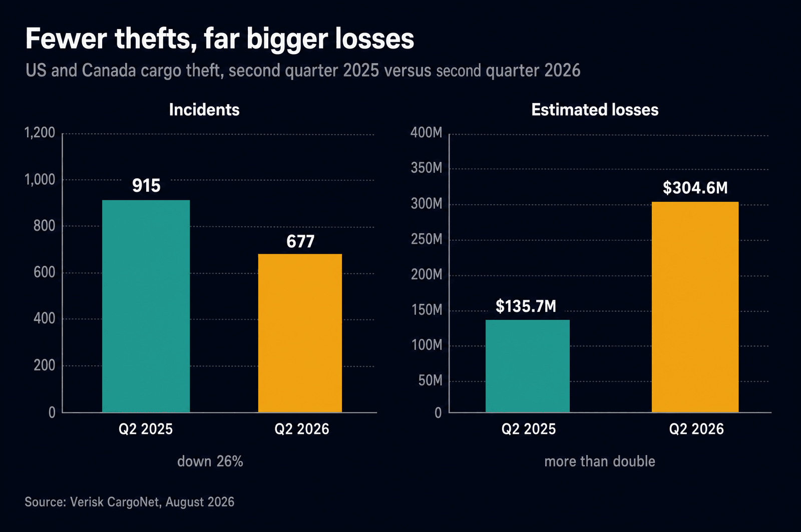
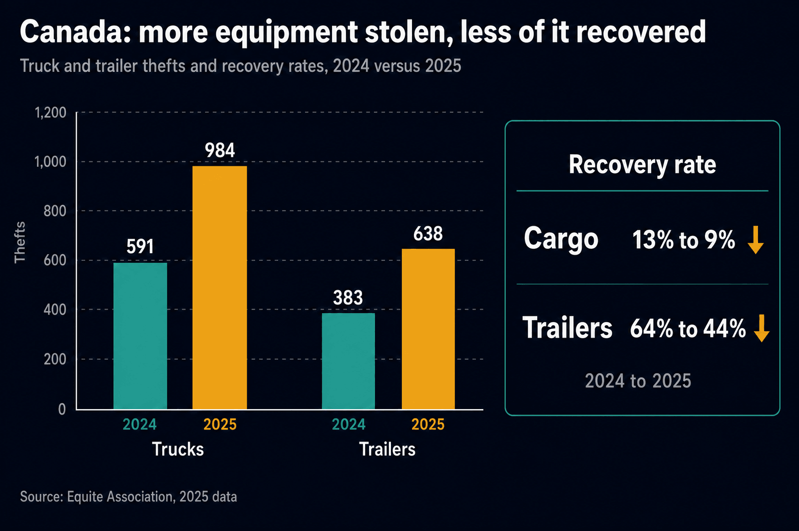
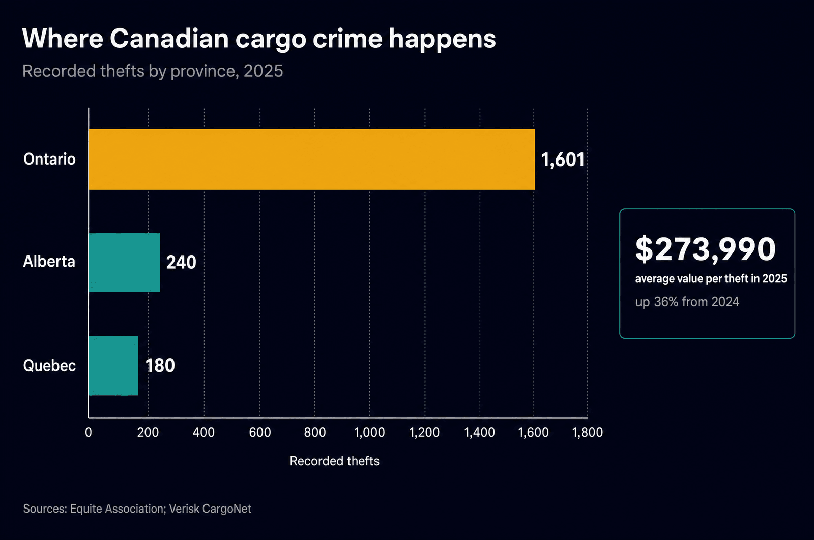

For most of the history of this industry, stealing freight meant showing up. Someone cut a lock, hooked an unattended trailer, or followed a truck out of a distribution centre and waited for the driver to stop for coffee. It was a physical crime with physical evidence, and the defences were physical too: fences, king pin locks, cameras, guarded yards.
That version of cargo crime is now the smaller half of the problem. The fastest growing way to steal a truckload in Canada is to convince someone to hand it to you. No lock is cut, no alarm goes off, and the freight leaves the dock with the receiver's blessing, loaded onto a truck that looked exactly like the carrier it was pretending to be. The theft is only discovered when the load fails to arrive, days later, by which point the trail is a spoofed email address and a burner phone.
The Crime Changed Shape
The headline number in cargo crime this year is going down, and that is exactly what makes it dangerous. Fewer thefts is the kind of statistic that gets read as good news in a board deck, right up until somebody checks what each theft now costs.
The shift is a business decision by the people committing the crime. Physical theft scales badly. It needs bodies, a yard, a buyer, and it exposes the crew to cameras and police. Fraud scales beautifully. One person with a laptop, a stolen carrier identity, and a working knowledge of how load boards operate can book several loads a week from a different country, and the freight walks out the door with a signature on the bill of lading.
What the Q2 2026 Numbers Say
Verisk CargoNet's second quarter report, published this month, documented 677 cargo theft incidents across the US and Canada, down 26 percent from a year earlier, while estimated losses more than doubled to $304.6 million. That works out to roughly $450,000 per incident. Industrial metals led the increase at 80 incidents, up from 54, with copper the most frequently stolen. Enterprise computing hardware and cryptocurrency mining equipment were close behind.

Set that against the full year 2025, when CargoNet counted 2,646 confirmed thefts, up 18 percent, with losses up 60 percent to roughly $725 million and the average theft rising 36 percent to $273,990. Two years of data now point the same way. The number of attempts matters less every quarter. What matters is that the attempts which succeed are aimed at freight worth a quarter of a million dollars or more.
"A falling theft count is not a safer network. It is a more selective one. The crews that remain are choosing better targets and taking more per hit."
The Canadian Picture
Canada is not a bystander in this. Equite Association's 2025 data shows truck thefts rising from 591 to 984 and trailer thefts from 383 to 638, close to a doubling in both categories in a single year. The recovery side moved the wrong way at the same time: cargo recovery fell from 13 percent to 9 percent, and trailer recovery from 64 percent to 44 percent.

Geographically the problem is concentrated. Ontario recorded roughly 1,601 thefts in 2025 against about 240 in Alberta and 180 in Quebec, with Peel Region and the Greater Toronto Area carrying much of the load. That is not a statement about Ontario drivers. It is a statement about density: the corridor holds the country's heaviest concentration of distribution centres, freight terminals, and cross-dock operations, which is the same concentration that makes it the most valuable place in Canada to be a thief. The tight warehouse market we wrote about last week pushes even more loaded trailers into yards and overflow lots in exactly that corridor.

How the Fraud Actually Works
Canadian load board and brokerage operators have been describing the same three patterns all year. None of them require breaking anything.
Business email compromise is the connective tissue. A spoofed reply on an existing thread changes a pickup number, a delivery address, or a phone number, and because it arrives inside a conversation that is already underway it rarely gets a second look. This is the same operational weakness that turns any handoff into a risk point, and it is why tracking that actually reports where a trailer is has moved from a customer service feature to a loss prevention control.
It is worth being precise about who gets hurt. In a physical theft, the carrier's cargo insurance is generally in play and the claim is unpleasant but legible. In a fraud, the party that took the freight was never the party on the contract, so the claim is contested from the first phone call, and the shipper, the broker, and the legitimate carrier whose identity was cloned all spend months arguing about who was supposed to catch it.
Why Your Insurance Is the Second Problem
Canadian underwriters have already repriced this risk. Insurance Business Canada reports that fleets are now being asked for documented security procedures, real time tracking and surveillance, evidence that telematics data is actually being used, formal carrier vetting, and service agreements that prohibit unauthorized double brokering, with cyber liability now part of the conversation rather than a footnote.
Read that list again from a shipper's point of view. Those are not insurance requirements. They are the questions you should be asking a carrier before you tender the first load, and the answers are cheap to give if the carrier already runs that way. A carrier that cannot say who is driving your freight, on what equipment, tracked by what system, is quoting you a price that does not include the risk they are handing you.
A Verification Playbook for Shippers
Most successful freight fraud is defeated by one uncomfortable phone call. The controls below take minutes and cost nothing.
How Keylink Protects a Load
Keylink is a family-owned, BC-based, asset-based full truckload carrier with offices in Abbotsford and Calgary. Asset-based matters here more than it does in a normal year. When a carrier owns the trucks and employs the drivers, there is no chain of unknown parties between your dock and your receiver, which removes the gap that most freight fraud is designed to exploit.
Send us your lanes and your high value SKUs. We will tell you exactly who hauls them, on what equipment, tracked how, before you tender a single load.
Get a Quote →Questions We Get Asked
What is double brokering and why is it dangerous?
Double brokering is when a party accepts a load as the carrier, then re-brokers it to a different carrier without the shipper's or broker's knowledge. The freight may still be delivered, but the paperwork no longer matches the truck. Insurance may not respond, you can be billed twice if the second carrier never gets paid, and if the load disappears there is no verified party holding it.
What is a fictitious pickup?
A criminal poses as a legitimate carrier, books a real load using cloned or stolen credentials, then arrives with a clean truck and correct paperwork and drives away with the freight. Nothing is broken into and no alarm sounds. It is one of the fastest growing theft methods in Canada, and it usually goes undetected until the delivery window passes.
Why are losses rising while the number of thefts falls?
Because organized groups shifted from volume to value. CargoNet recorded 677 incidents in Q2 2026, down 26 percent year over year, while estimated losses more than doubled to $304.6 million. Fewer, better targeted thefts of high value freight such as industrial metals and enterprise computing hardware produce far larger losses per event.
Which Canadian province sees the most cargo crime?
Ontario, by a wide margin. Equite Association recorded roughly 1,601 thefts there in 2025, against about 240 in Alberta and 180 in Quebec, with Peel Region and the Greater Toronto Area accounting for a large share. That reflects freight density more than anything else.
Does insurance cover freight lost to fraud?
Not always. Cargo policies are written around the carrier that was contracted. When a load has been double brokered or handed to an impersonator, the party holding the freight is often not the insured party, which leaves the claim contested. Canadian underwriters are responding by requiring documented security procedures, real time tracking, carrier vetting, and contract language prohibiting unauthorized re-brokering.
How do I verify a carrier before releasing a load?
Confirm the operating authority number in the official registry rather than trusting the paperwork sent to you, and call back on the number the registry lists. Require the insurance certificate to come from the broker or insurer directly. Match driver, tractor, and trailer at the gate against dispatch. Refuse last minute changes of truck, driver, or address without a verified callback.
Sources and Further Reading
- Verisk CargoNet via Heavy Duty Trucking, "Cargo Thefts Decline, Losses Surge from High-Value Loads", August 2026.
- Verisk CargoNet via Insurance Journal, "Cargo Theft Surges 60% in 2025, $725M in Estimated Losses", January 2026.
- Equite Association via Insurance Business Canada, "Cargo theft surge is tightening underwriting standards for Canadian trucking fleets".
- Truck News, "Canada's trailer theft nearly doubles as cargo losses go underreported in 2025".
- Loadlink Technologies, "Fraud trends hitting the Canadian market in 2026".
- DAT Freight & Analytics, "Fraud trends hitting the Canadian market in 2026: what brokers need to know".
- Carrier Management, "Cargo Theft Surged 60% in 2025".